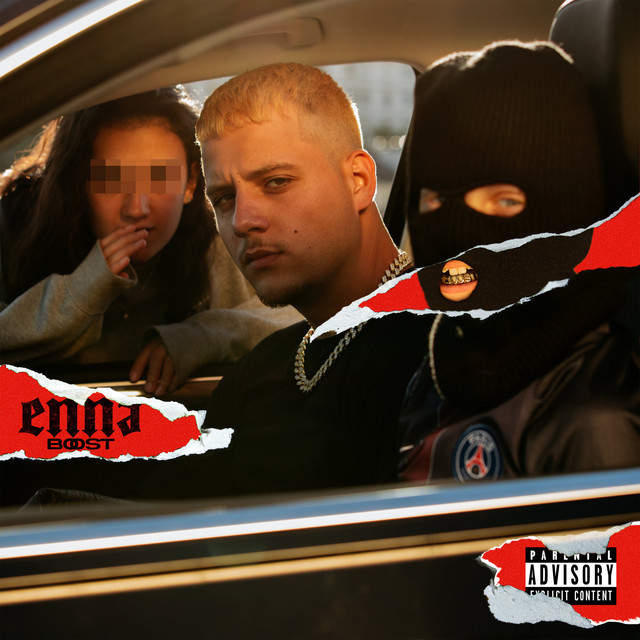

PLK
PLK, aussi dit Polak, de son vrai nom Mathieu Pruski est un rappeur né le 15 avril 1997, à Paris.
Il est d'origine corse (du côté de sa mère) et polonaise (du côté de son père). Origine d'où il tirera
son pseudo.
Quand il était petit, on le surnommait « mini Polak » en référence au surnom "Polak" donné à son père.
Il a donc fait de « Polak » son nom de scène pour faire référence à ses origines Polonaises.
Vers ses 14 ans, il commence à sortir des morceaux avec La Confrérie. Trois mois plus tard, le groupe du
Panama Bende se forme avec lequel il participe à de nombreux open-mics.
Aujourd'hui, PLK est un des rappeurs les plus écoutés en France et il sait satisfaire tout le monde avec
ses sons entrainants et qui donnent envie de danser toute la night !
Ma chanson favorite :
Idiote
Et pourquoi donc?
Cette chanson est tout ce qu'il y a de plus entrainant. Niveau prod, elle est un peu type samba,
qui vous donne envie de bouger votre popotin comme jamais.
Mais derrière cette mélodie joyeuse, se trouvent des paroles très profondes.
En effet, PLK parle de sa situation familiale. Il y parle de sa vie avec ses parents séparés,
qui ont crées de nouvelles familles.
Il parle de cette instabilité familiale qui lui a apporté un demi-frère et une demi-sœur, qu'il
a dû apprendre à connaître et aimer au cours de sa vie.
Ses mots sont forts, il arrive à nous faire ressentir ce qu'il a lui-même ressenti.
Et ce décalage entre prod et paroles fait que cette chanson est d'autant plus touchante.
Ses nouveautés :
Enna Boost
Un premier album, "Enna" est sorti le 28/08/20. Composé de 18 titres, cet album parle en majorité
de sa vie et de sa famille.
Le mot "ENNA" est aussi le nom de son label et vient de l'union des noms de son demi-frère et
celui de sa demi-sœur.
ENZO + LENA = ENNA ... si c'est pas beau ça !
Enna est devenu, fin 2021 double disque de platine, et à cette occasion, PLK a sorti une
extension, ENNA BOOST
Une extension où l'on découvre un nouveau et un ancien PLK en même temps. Il ne vous reste plus
qu'à l'écouter !